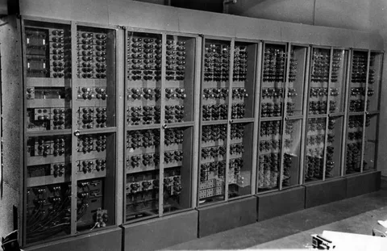

Классификация поколений ЭВМ
Каждое поколение компьютеров становилось быстрее, меньше и доступнее для пользователей.
1-е поколение (1940-е — 1950-е)
Основывались на электронно-вакуумных лампах. Машины были огромными, занимали целые комнаты и потребляли много энергии (пример: ENIAC).

2-е поколение (1950-е — 1960-е)
Лампы заменили транзисторами. Компьютеры стали надежнее, меньше и быстрее вычисляли данные.
3-е поколение (1960-е — 1970-е)
Появление интегральных схем (чипов). Это позволило разместить тысячи транзисторов на одной маленькой кремниевой плате.